Learn the fundamental concepts of digital logic, binary numbers, and logic gates that power every modern processor.
2 of 40
20 Minutes
Beginner
Lesson 1
After completing this lesson you will be able to:
The foundation of all modern digital electronic systems.
Digital Logic is the branch of electronics that represents and processes information using only two states: 0 (LOW) and 1 (HIGH). Unlike analog systems that operate with continuously varying signals, digital systems work with discrete binary values, making them highly reliable, accurate, and suitable for modern computing.
Every digital device—including smartphones, laptops, gaming consoles, AI processors, automotive ECUs, and servers—uses digital logic to perform calculations, store data, and make decisions.
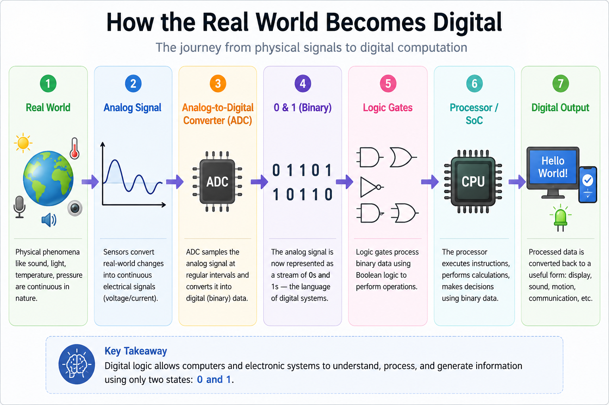
Figure 1: Digital information flows from the real world through binary processing to digital systems.
Computers understand only two values: 0 and 1.
The Binary Number System is a base-2 numbering system consisting of only two digits: 0 and 1. Every processor, memory device, FPGA, ASIC, GPU and AI accelerator stores and processes information using binary numbers. Unlike humans, who naturally use the decimal (base-10) system, digital hardware uses binary because electronic circuits can reliably distinguish between two voltage levels.
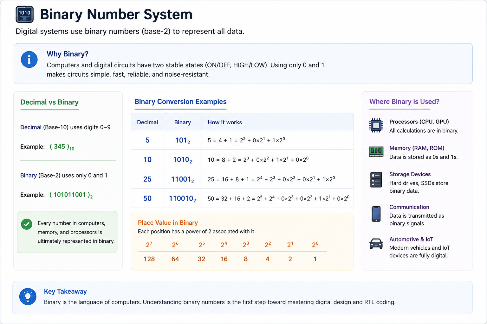
Figure 2: Binary numbers form the foundation of every digital computer.
| Decimal | Binary |
|---|---|
| 0 | 0000 |
| 1 | 0001 |
| 2 | 0010 |
| 3 | 0011 |
| 4 | 0100 |
| 5 | 0101 |
| 6 | 0110 |
| 7 | 0111 |
| 8 | 1000 |
Digital circuits operate using only two stable voltage levels.
Digital systems represent information using two logic states. Logic LOW (0) represents an OFF state, while Logic HIGH (1) represents an ON state. Processors, memories and communication interfaces interpret these voltage levels to perform billions of operations every second.
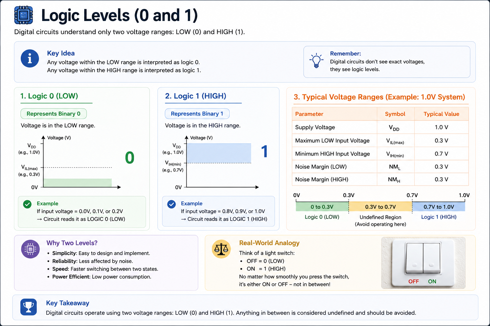
Figure 3: Logic HIGH and Logic LOW voltage representation.
Logic gates are the fundamental building blocks of digital hardware.
Logic gates perform simple logical operations on binary inputs. Complex processors contain billions of these gates connected together to build arithmetic units, memories, control logic, caches, AI accelerators and complete CPUs.
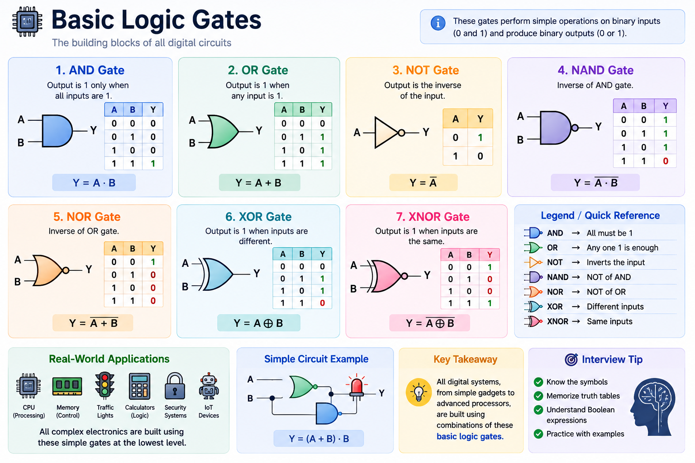
Figure 4: Overview of the seven fundamental logic gates.
The mathematical foundation of digital logic.
Boolean Algebra is used to describe and simplify digital circuits. Every RTL design, logic gate and combinational circuit follows Boolean rules. The three basic Boolean operations are:
RTL designers use Boolean Algebra every day to optimize logic, reduce hardware complexity and improve performance.
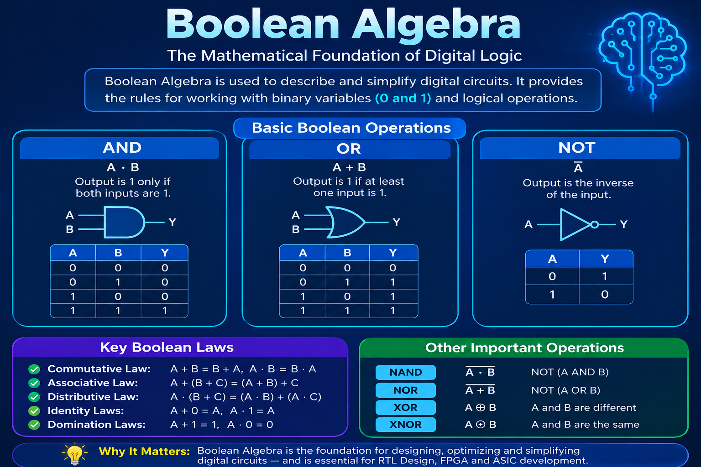
Figure 5: Boolean Algebra operations used in digital circuit design.
Selecting and routing digital signals efficiently.
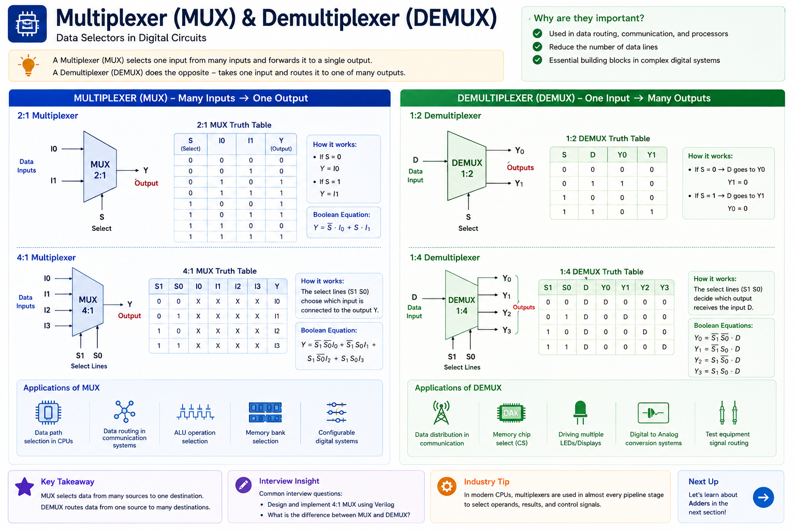
Figure 6: Multiplexer and Demultiplexer overview.
A Multiplexer (MUX) selects one input from multiple inputs and forwards it to a single output. A Demultiplexer (DEMUX) performs the opposite operation by routing one input to one of many outputs. MUXes and DEMUXes are widely used in processors, communication systems and memory controllers.
module mux2to1(
input a,
input b,
input sel,
output y
);
assign y = sel ? b : a;
endmodule
Note: Click the link to open the design and run the simulation directly on EDA Playground.
module demux1to2 (
input wire d,
input wire sel,
output wire y0,
output wire y1
);
assign y0 = (~sel) & d;
assign y1 = sel & d;
endmodule
Note: Click the link to open the design and run the simulation directly on EDA Playground.
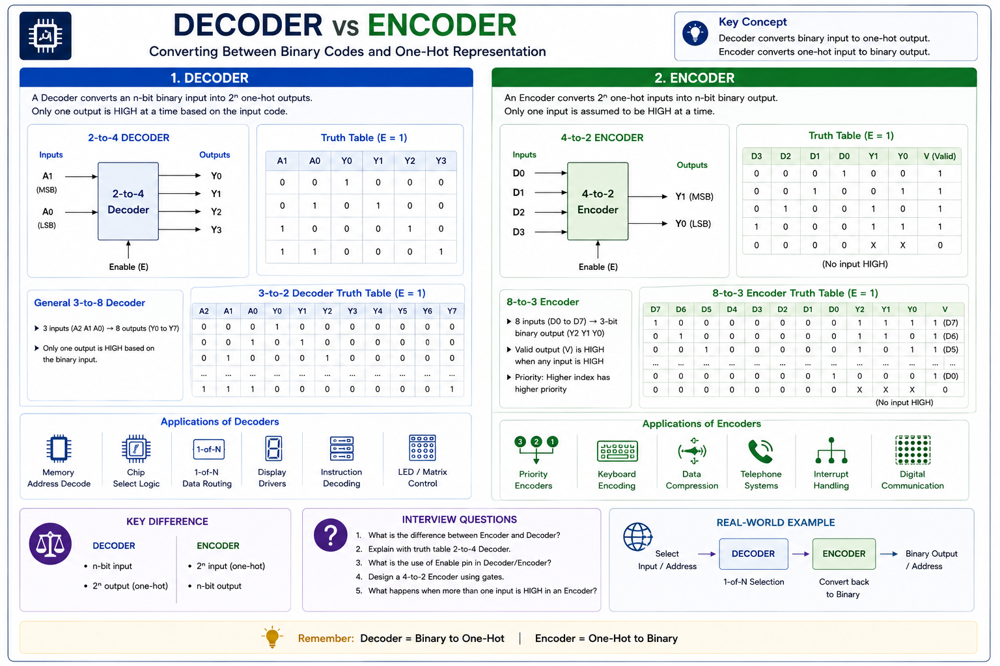
Figure 7: Binary decoding and encoding.
A decoder converts binary inputs into one active output. An encoder performs the reverse operation by converting active inputs into binary outputs. These circuits are fundamental in memories, interrupts, keyboards and address decoding.
module decoder2to4(
input [1:0] a,
output [3:0] y
);
assign y = 4'b0001 << a;
endmodule
Note: Click the link to open the design and run the simulation directly on EDA Playground.
module encoder4to2(
input [3:0] d,
output reg [1:0] y
);
always @(*) begin
case(d)
4'b0001 : y = 2'b00;
4'b0010 : y = 2'b01;
4'b0100 : y = 2'b10;
4'b1000 : y = 2'b11;
default : y = 2'b00;
endcase
end
endmodule
Note: Click the link to open the design and run the simulation directly on EDA Playground.
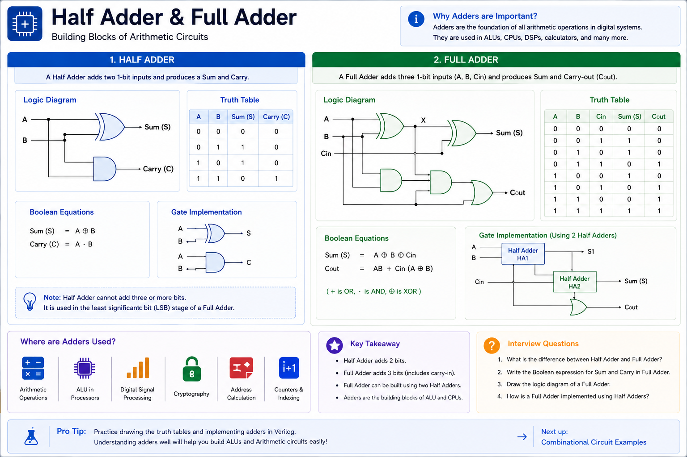
Figure 8: Half Adder and Full Adder.
Adders perform binary arithmetic. Half Adders add two bits. Full Adders add two bits along with a carry input. Every ALU inside a processor is built using thousands of adders.
module half_adder(
input a,
input b,
output sum,
output carry
);
assign sum = a ^ b;
assign carry = a & b;
endmodule
Note: Click the link to open the design and run the simulation directly on EDA Playground.
module full_adder(
input a,
input b,
input cin,
output sum,
output carry
);
assign sum = a ^ b ^ cin;
assign carry = (a & b) |
(b & cin) |
(a & cin);
endmodule
Note: Click the link to open the design and run the simulation directly on EDA Playground.
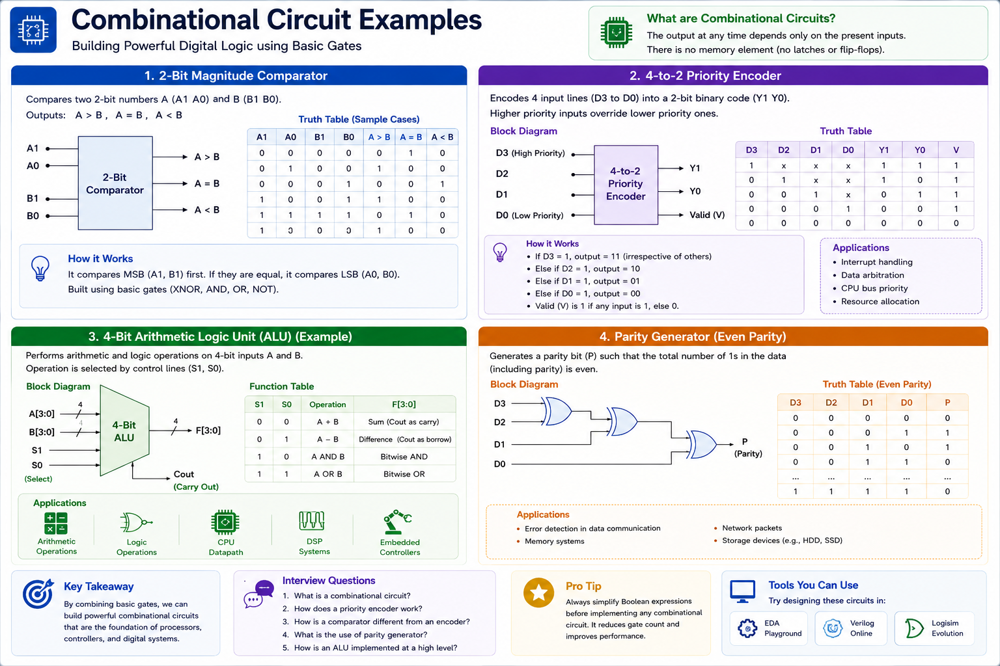
Figure 9: Common combinational logic circuits.
Combinational circuits produce outputs based only on present inputs. Examples include multiplexers, decoders, comparators, arithmetic logic units and priority encoders. They are extensively used in CPUs, GPUs, AI accelerators and communication hardware.
How billions of logic gates work together inside modern processors.
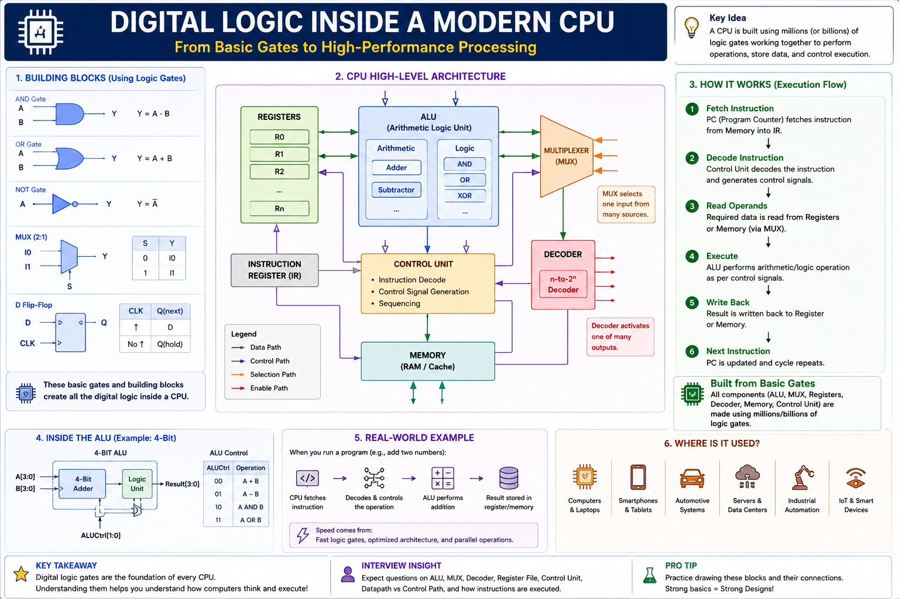
Figure 10: Internal digital building blocks of a modern CPU.
Modern processors contain billions of transistors organized into logic gates, registers, multiplexers, decoders, arithmetic logic units (ALUs), caches, and control units. All complex operations—from opening an app to running AI models—are performed using these basic digital building blocks.
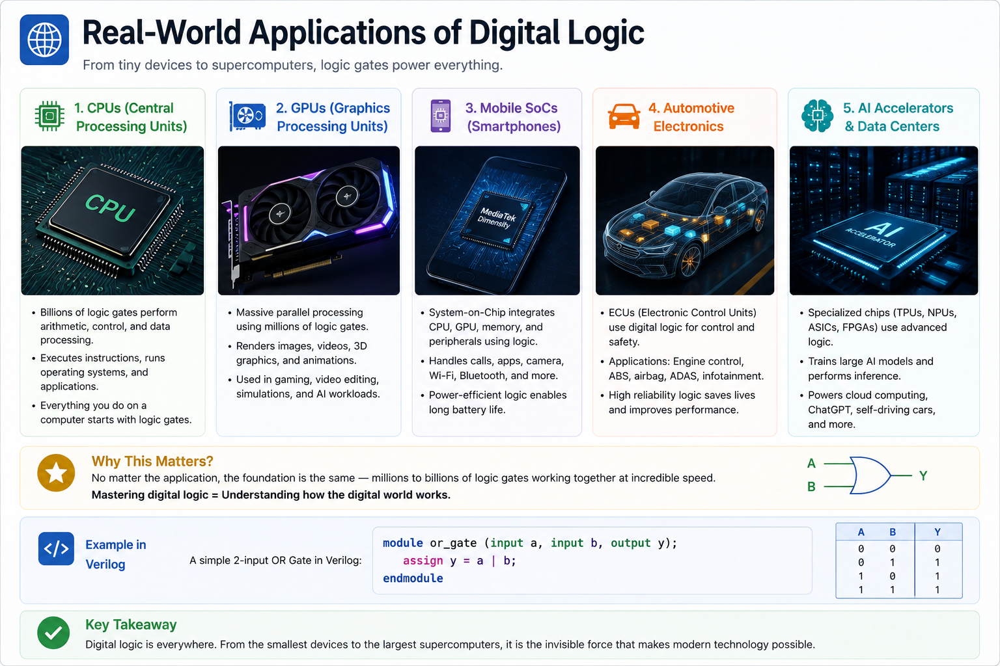
Figure 11: Digital logic powers modern electronic systems.
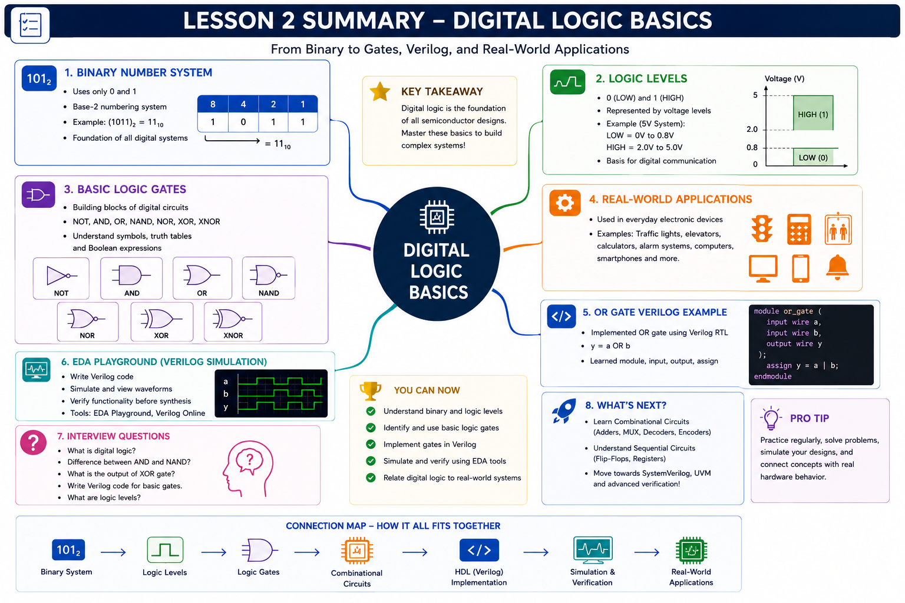
Figure 12: Digital Logic Basics — complete learning roadmap.
| A | B | Y = A | B |
|---|---|---|
| 0 | 0 | 0 |
| 0 | 1 | 1 |
| 1 | 0 | 1 |
| 1 | 1 | 1 |
module or_gate(
input a,
input b,
output y
);
assign y = a | b;
endmodule
Note: Sign in to your EDA Playground account to run the simulation and observe the waveform.
Modern processors contain billions of transistors organized into logic gates, multiplexers, decoders, adders, registers, and control logic. Mastering these basic building blocks is the first step toward becoming an RTL Design, FPGA, ASIC, or Design Verification Engineer.
Design a 2-input XOR gate in Verilog. Simulate it using EDA Playground and verify all possible input combinations.
You have completed Lesson 2 – Digital Logic Basics. You now understand binary numbers, logic gates, Boolean algebra, and the most common combinational circuits used in modern digital systems.
In Lesson 3, you'll learn Combinational Logic Design, including continuous assignments, combinational circuits in Verilog, and real hardware design examples.